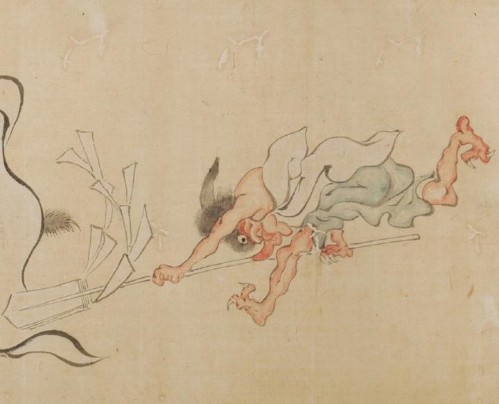

白と青の衣を身にまとった赤鬼。大幣を使って、前方を歩く白布の化物を追い払っている。
出典：親書誌：U426_nichibunken_0054：百鬼夜行絵巻；ヒャッキヤギョウエマキ／日付：2006／資源識別子：U426_nichibunken_0054_0001_0002
Copyright (c)2010- International Research Center for Japanese Studies, Kyoto, Japan. All rights reserved.